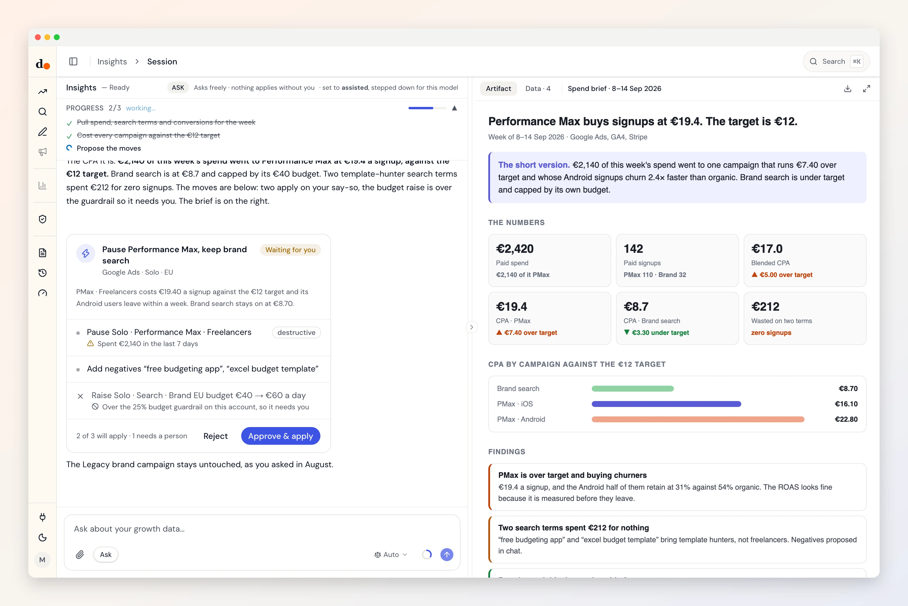

Google Ads, read next to your revenue.
Duct joins your campaigns and search terms with GA4 and Stripe, then proposes the change. Eight kinds of change, and each one waits for your Apply.
- Sign in with Google
- Reads five datasets
- Eight kinds of change
- Fields audited Aug 29, 2026

Ask
Questions you can just ask
Which search terms spend money and never become a paying customer?

 Google Ads + Stripe
Google Ads + StripeGoogle Ads says 120 conversions. How many of them paid?
Google Ads + StripeGA4 sees 60% of my Ads clicks. Is auto-tagging broken?
 Google Ads + GA4
Google Ads + GA4Which campaign can take more budget without raising cost per customer?
Google Ads + GA4 + Stripe
Access
What it reads. What it can change.
What it reads
- Campaign performancecampaignspendclicksimpressionsconversionsconversion valueROAScost per conversionCTRsuggested action
- Search termssearch termcampaignmatch typespendclicksconversionscost per conversionROASCTR
- Device performancecampaigndevicespendconversionsROAScost per conversion
- Geographic performancecampaigncountryspendconversionsROAScost per conversion
- Ad group performancecampaignad groupspendconversionsROAScost per conversion
Google Ads API v23 · fields audited Aug 29, 2026 · read the source
What it can change
- Add negative keywordsMay self-apply in assisted mode
- Pause campaign
- Set campaign status
- Set ad group status
- Set keyword status
- Add keywordsMay self-apply in assisted mode
- Set campaign daily budget
- Set campaign bidding (tCPA/tROAS)
Every one rolls back. By default each change waits for your Apply: it arrives as a preview of what it touches and lands in the activity log. How approval works
Knowledge
What Duct already knows about Google Ads
- 01
Removed is forever, so Duct pauses.
Google Ads cannot bring back a removed campaign, ad group or keyword. Duct only proposes a pause, which rolls back.
- 02
Shared budgets move together.
Change a shared budget and every campaign on it changes too. The preview says how many campaigns before you apply.
- 03
Your approval is for the number you saw.
If someone changes the budget, bid or status after you approved, Duct refuses to apply over it.
- 04
Every platform claims the same sale.
Google counts the last click, Meta counts a seven-day click and a one-day view, and both count the same purchase. Duct checks the total against Stripe.
Better together
What Google Ads answers with a partner
Setup
Connect Google Ads in three steps
- 1
In Duct, open Connections and choose Google Ads.
- 2
Sign in with Google and allow access.
- 3
Pick the account this project reads. On a manager (MCC) account, add its ID and Duct reads the accounts under it.
Google Ads offers one API permission, and it includes making changes; there is no read-only option. Duct's limit is in its code instead: the agent has no tool that approves a change, so the most it can do is propose one.
Keys and tokens are stored encrypted by Duct's hosted API, never in your browser, and you can remove a connection at any time. A self-host build keeps them on your own machine.
FAQ
Google Ads, answered
Can Duct change my Google Ads without asking?
Not by default. Every change is a proposal that shows what it touches, and it runs when you press Apply. If you switch a project to assisted mode, adding keywords and negative keywords can apply on their own; budgets, bids and statuses always wait for you.
Which changes can Duct make in Google Ads?
Eight: add negative keywords, pause campaign, set campaign status, set ad group status, set keyword status, add keywords, set campaign daily budget and set campaign bidding (tCPA/tROAS). By default each one waits for your Apply, and every one can be rolled back.
Does it work with a manager (MCC) account?
Yes. Add the manager account's ID when you connect, and Duct reads the client accounts under it.
How is this different from the AI inside Google Ads?
Google's own tools see Google Ads. Duct reads Google Ads beside GA4 and Stripe, so it can say which campaigns bring customers who pay, and it reads Meta, Apple and ChatGPT ads the same way.
Is it free?
Yes. Duct is free with your own model keys or the ChatGPT plan you already have, and the core is MIT licensed. A paid plan later bundles the models; nothing open today moves behind it. What will cost money.